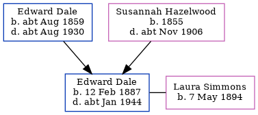

Edward William Alfred Dale 1887 - c1944
[ Home ] | [ Calendar ] | [ Surnames Index ] | [ Errors ] | [ Family History ]An agricultural labourer and the child of Edward Dale (a labourer ag) and Susannah Hazelwood, Edward Dale, the second cousin twice-removed on the father's side of Nigel Horne, was born in Chartham, Kent, England on 12 Feb 18871,2 and baptised there at St Mary's Church on 20 Mar 1887. He married Laura Simmons there at St Mary's Church on 26 Dec 19155.
During his life, he was living at Prospect Row, Harbledown, Kent, England on 5 Apr 18916; at Shalmsford Street in Chartham on 2 Apr 19117; and at 27 London Road, Swale, Kent on 29 Sept 19391. During 1903, he was serving in the army (regiment: Buffs (East Kent Regiment); Service number: 7156).
He died c. Jan 1944 in Sittingbourne, Kent, England3,4 and was buried at St Mary's Church, Teynham, Kent on 14 Jan 1944 (an overcast day)4.
Parents
- Edward William was born c. Aug 1859
- Susannah was born in 1855
Citations
- 1939 Register - Findmypast (was the head of the household)
- England & Wales births 1837-2006 - Findmypast
- England & Wales deaths 1837-2007 - Findmypast
- Kent, Canterbury Archdeaconry Burials - Findmypast
- England & Wales Marriages 1837-2005 - Findmypast
- 1891 England, Wales & Scotland Census - Findmypast (was age 4 and the son of the head of the household)
- 1911 Census for England & Wales - Findmypast (was age 24 and the son of the head of the household)
Media
England & Wales marriages 1837-2008 - BMD/M/1915/4/AZ/000353/088
England Marriages 1538-1973 - R_848405724
Kent, Canterbury Archdeaconry marriages 1538-1928 - GBPRS/CANT/M/97057715/1
Kent, Canterbury Archdeaconry burials 1538-1988 - GBPRS/CANT/D/95365597
England & Wales deaths 1837-2007 - BMD/D/1944/1/AZ/000254/088
England & Wales births 1837-2006 - BMD/B/1887/1/AZ/000138/183
British Army Service Records 1760-1915 Image - GBM-WO97-4633-009-001
1891 England, Wales & Scotland Census - GBC/1891/0005722666
1939 Register Transcription - TNA-R39-1854-1854E-019-30
England Births & Baptisms 1538-1975 - R_885426024
Kent Baptisms - GBPRS/CANT/B/96194607
Kent marriages and banns - GBPRS/CANT/M/94078929/1
Family Tree
Map
Generated by ged2site. Last updated on Jul 3, 2024
Known Issues
Census information missing between Census UK 1891 and Census UK 1911
Location for "military service" on 1903 is empty